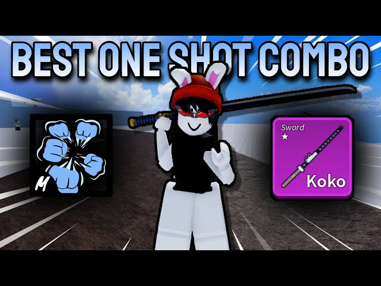

Combos fáceis
.jpg)
Vamos começar com um combo fácil que é o de ice,dragon talon e spike trident, ele é um dos combos mais fáceis de usar por causa da ice que congela e por causa do dano que ela dá no oponenete. O combo é:
V ice, C ice,
Z ice, X dragon talon, Z dragon talon,
X spike trident e C dragon talon

Outro combo fácil é o de shadow, death step e yama. Esse combo é um dos mais fáceis de se utilizar por causa do seu dano e por causa do seu stun. Esse combo é bem utilizado por causa do dano da shadow e do death step e a yama serve para você fazer o cara voltar para o combo depois de ser lançado para cima. O combo é:
Z shadow, X yama,
V shadow, C death step,
Z death step e X death step
.jpg)
Esse é um dos combos mais fáceis e spam do jogo, o combo de rumble,god human e cdk. Um combo muito utilizado por bounty hunters iniciantes ou nível médio,esse combo utiliza ponto em soco, defesa e espada. É um combo que tem várias variações como com outros estilos de luta ou outras frutas. O combo é:
x rumble, z cdk,
x cdk, z god,
c god e x god
Combo de mini yoru, uma das espadas mais difíceis de se conseguir.O combo é rumble, mini yoru e god human, esse combo utiliza ponto em soco, defesa e espada. Ele é um combo fácil de se aprender e muito forte. O combo é:
x rumble, z mini yoru,
x mini yoru, z god,
c god e x god
combos médios
.jpg)
Agora vamos começar com os combos médios, que são um pouco mais avançados que os fáceis.Então, vamos começar com o primeiro combo médio que é o de dragon, god human e spike trident,ele parece ser um combo fácil, mas se você for tirar pvp com alguém sem ter treinado o combo antes, você pode acabar morrendo no pvp. Ele é um combo até que bem utilizado por bounty hunters por causa da sua jogabilidade. O combo é:
C dragon, X spike trident,
X dragon, Z god,
C god, X god e Z dragon
.jpg)
Vamos para outro combo médio, esse combo é de venom, god human e spike trident. Por que ele é um combo médio e não é um combo fácil? bom,por que ele é um combo meio difícil de se usar por causa que a fruta não acerta de tão longe mas se você aprender a usar ele vai ser fácil de se acertar. O combo é:
X venom, Z venom,
X spike trident, Z god,
C god e X god
.jpg)
Muitas pessoas vão falar que não é um combo médio mas na minha opnião é sim,esse combo é o de dough, eletric v2 e spike trident. Ele é um combo que na minha opnião é um combo médio, por causa que se você acabar errando algum ataque ou você vai ter que recomeçar o combo ou ter que improvisar para finalizar o combo, mas ele um combo muito bom para pegar bounty. O combo é:
C eletric, X dough,
V dough, Z eletric,
C dough e X dough
.jpg)
Uma fruta que muita gente quer rework ou despertar, essa fruta é a gomu ou mais conhecida como fruta da borracha.esse combo é o de gomu, god human e spike trident. Esse combo é um que eu acho muito bom, mas é um combo meio difícil de se aprender. O combo é:
X spike trident, C gomu,
Z god, C god,
F gomu, Z gomu
OBS: se você não quebrar o haki da obs do oponente antes, você não vai conseguir pegar no X da spike trident.
Combos difíceis
.jpg)
Então, depois de ter mostrado tipos de combos fáceis e médios, vamos agora para os combos difíceis. Vamos começar com o combo de rumble, soul cane, super human e acidum rifle. Esse é um combo skill que usa ponto em arma e é um combo bastante utilizado para ir torneios legais e para caçar bounty. O combo é:
X rumble, Z soul,
Z acidum, Click do acidum,
X acidum, Z super,
C super, teleporte e X super
.jpg)
Um combo que é que muitas pessoas gostam de usar e que é muito forte é o combo de rumble, yoru e super human. Ele é um combo skill que é bastante utilizado para caçar bounty por causa do seu dano e por causa do seu ataques que pegam de uma distância razoável. Ele é um dos meus combos favoritos, mesmo eu não tendo yoru. O combo é:
X rumble, Z yoru,
X yoru, Z super human
C super human, teleporte e X super human

Um combo que utilizei por bastante tempo para caçar bounty por causa da sua velocidade e por causa do seu dano. Esse combo é o de rumble, super human e shisui. Ele é um combo que meio difícil de se aprender, mas quando pegar o jeito vai ficar fácil o combo. O combo é:
X rumble, X shisui,
Z super human, C super human
Z shisui e X super human
Um combo difícil que poucas pessoas usam mas é muito bom, é o combo de rumble, koko e super human. Ele não é um combo muito utilizado mas ele é um combo skill e muito bom de se utilizar. O combo é:
V ice, C ice,
X koko, Z super human
Z koko, C super human
Site de combos do blox fruit
Combos são uma variedade de opções de itens que você pode usar para matar seu oponente na hora do pvp,mas você precisa saber com quem você está tirando pvp e com que combo esse oponente está usando.
Começo dos combos
Para começar no pvp você precisa criar um combo ou pegar algum combo conhecido, mas o aconselhável é pegar um combo mais fácil para depois pegar um combo mais difícil.Combos fáceis consistem em itens que não são tão difíceis de usar e que você aprende a usar o combo muito rápido.Também temos os combos médios, que consistem em combos um pouco mais difíceis de aprender por causa da sua velocidade e precisão, mas com o tempo você vai se acostumando com o combo.E por último temos os combos mais difíceis que consistem em itens muito mais difíceis de usar como o serpent bow e acidum rifle.
Dicas para quem é fruit user
Para quem é fruit user, você deve usar ao máximo itens de suporte para ficar mais fácil de mandar os combos. EXEMPLOS: o combo de shadow e death step v2, para ajudar no você usa a yama para jogar o cara para baixo e assim continuar o combo. Então existem combos que precisam de suporte para finalizar o oponente.